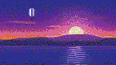

Turn any video into Minecraft blocks
Turn videos into a Minecraft Bedrock add-on (.mcaddon) entirely in your browser. Your videos are never uploaded.
See what each setting does
Pick a size, a palette and a dithering method. Every picture is real output from this converter for one frame of the sample.

Four kinds of input, one add-on
Everything is converted in this browser tab and packed into a .mcaddon file for Minecraft Bedrock.
- VideoMP4, WebM, MOVBlock animation with sound
- PicturePNG, JPEG, WebP, GIFStill block art
- MagicaVoxel.vox3D model or animation, as built
- MMD.pmx + .vmdA dancing 3D figure
From file to world in four steps
Add your files
Drop videos, pictures or .vox files, record with the camera, or pick an MMD model and dance.
Choose the look
Start from a quality preset, then adjust size, frame rate, palette and dithering if you want.
Build the add-on
The page reads the frames, converts them and packs the add-on. A preview shows how it will look in the game.
Download and play
- Open the .mcaddon to import it into Minecraft. In the world settings, turn on both the behavior pack and the resource pack, and turn cheats on.
What stays on your device
The conversion runs in this tab. Here is exactly what moves over the network and what does not.
Never leaves your device
- Your videos, pictures and models
- Every frame and the sound taken from them
- The finished add-on: it is made in memory and saved by your browser
Downloaded to your device
- This page and its scripts
- The converter itself: Python for the browser, about 30 MB on the first visit, from this site (a fixed, checked version; nothing is loaded from other sites)
Sent from your device
To learn how many people use it, this page counts page opens and finished add-ons with GoatCounter.
Nothing.
The first time, the page loads Python for the converter (about 20 MB), which takes a while. Get the Windows app
Converter
Add files, adjust the settings and build. The add-on is saved straight from this tab.
1. Videos and .vox
MMD model and dance (.pmx + .vmd) to 3D
Pictures (PNG, JPEG, WebP…) work too: they become still block art.
MagicaVoxel animations (.vox) can be added too: their size and frames are kept, and only FPS and palette apply.
2. Settings
Quality and size
Frame rate and length
Display mode and depth
Colour and palette
Image mode (experimental)
Optimization
Minecraft compatibility
Pack name and commands
4. Preview
How the add-on looks in Minecraft, drawn with the same rules as the game.